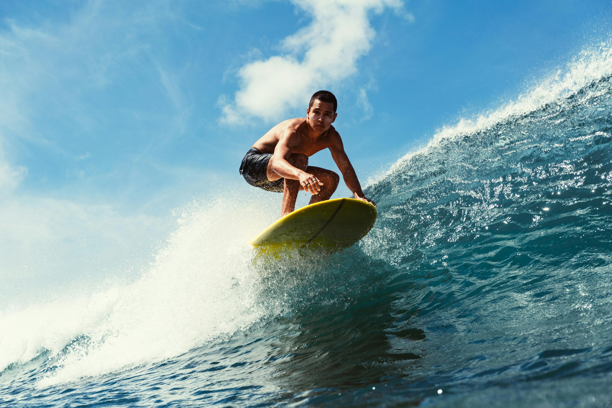
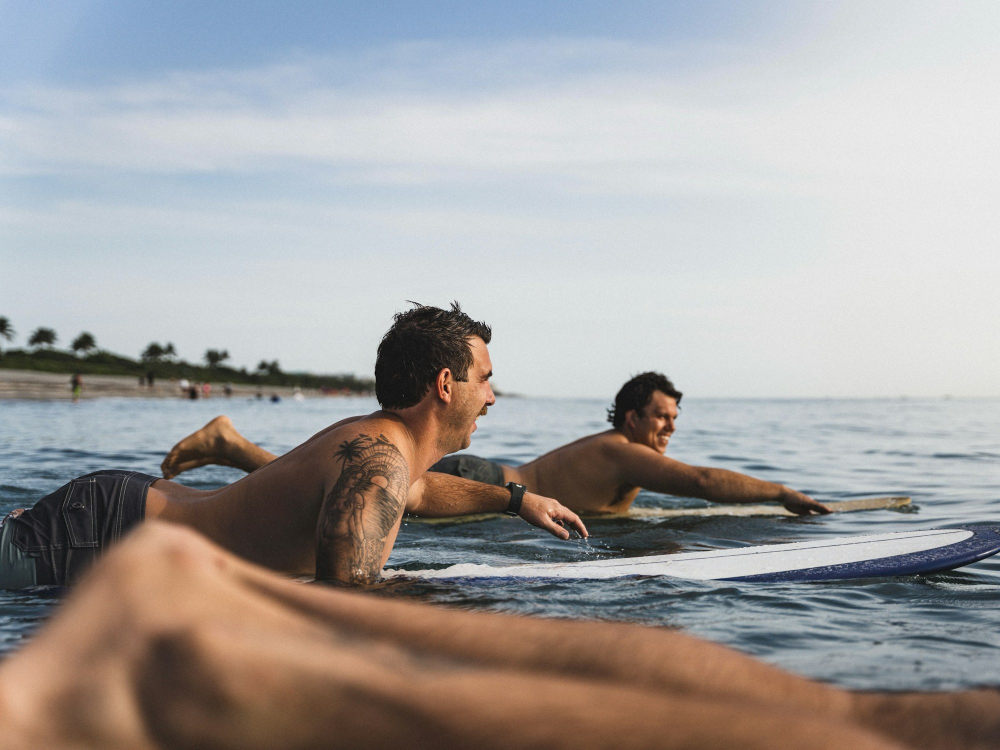
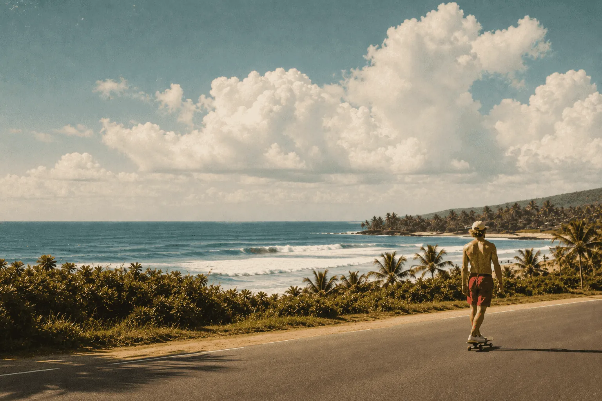

Leia o oceano.
Vento, corrente, ondas. Antes de entrar, observe o lugar e siga as orientações de quem acompanha sua sessão.

A primeira remada. O frio na barriga. A onda que faz você esquecer de todo o resto.
A MARÉ nasce desse encontro. Um clube para aprender, se movimentar e dividir bons dias dentro e fora d’água. Do primeiro contato com a prancha ao surf que vira parte da rotina.
Ache o seu ritmoEspaço para tentar, cair, rir e tentar de novo. A evolução vem com a experiência.
Aprendizado próximo, troca de histórias e a energia de quem gosta de estar aqui.
Observar as condições, respeitar o lugar e deixar a praia melhor do que encontramos.
Todo mundo tem um ponto de partida.
Escolha o seu e conheça a experiência.

SEU PRIMEIRO DROP COMEÇA AQUIConheça a prancha, sinta o movimento da água e descubra a alegria de ficar em pé pela primeira vez. Sem cobrança. Com orientação a cada remada.

O surf não acaba quando você sai do mar.
Ele segue na música, nas conversas
e no caminho de volta pra casa.
Vento, corrente, ondas. Antes de entrar, observe o lugar e siga as orientações de quem acompanha sua sessão.
Conheça o equipamento e pratique o movimento na areia. Seu corpo aprende um passo de cada vez.
Reme, sinta e repita. O objetivo é sair da água com uma história boa e vontade de voltar.
Escolha como você quer viver essa experiência e leve uma sugestão de sessão com você.
Um pouco menos de dúvida.
Um pouco mais de vontade.
Não. A experiência Primeira onda foi pensada para quem está começando, com familiarização com a prancha e prática dos movimentos básicos.
Roupa de banho confortável, toalha, água, proteção solar e uma troca de roupa. Antes de uma sessão real, confirme com a escola os equipamentos e itens incluídos.
O oceano define o ritmo. As condições precisam ser avaliadas por quem conduz a aula; mudar o horário, adaptar a atividade ou remarcar pode fazer parte da experiência.
Pode. A proposta do clube é criar espaço para encontros. No seletor acima você encontra uma sugestão para ir por conta, em dupla ou com amigos.
Os dois fazem parte da nossa cultura. O equilíbrio, o movimento e o prazer de estar ao ar livre conectam essas experiências — cada uma no seu tempo e no seu lugar.